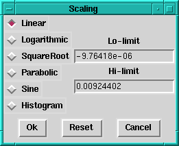

|  | This dialogue is used to set the way in which data values are scaled and mapped onto the colour table. The upper and lower limits can be set to over or under-expose the image. All data values below the lower limit are plotted in the lowest colour - values above the upper limit are plotted in the highest colour. (Note that pixels with bad quality are plotted in the background colour, ie black, which may or may not be the same as the lowest colour in the table.) The radio buttons on the left set how the data between the limits are scaled between the extremes of the colour table. If the data contain zeroes or negatives and logarithmic or square-root scaling are selected, then an appropriate offset will be pre-applied to the data values. |